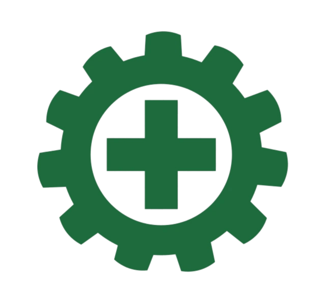

OUR PROJECT
Komitmen K3 dalam kegiatan nyata
Komitmen kami terhadap K3 tercermin lewat pelatihan berkelanjutan, penerapan kebijakan, inspeksi tempat kerja, dan identifikasi bahaya secara proaktif.
Keselamatan dan Kesehatan Kerja sebagai tanggung jawab bersama — bukan hanya tugas tim HSE.

Budaya K3 dimulai sebelum bekerja.
Safety induction yang konsisten dan terdokumentasi menjadi bagian penting dari pembentukan budaya K3 di perusahaan, sekaligus bentuk kepatuhan terhadap regulasi ketenagakerjaan yang berlaku. Melalui induction ini, perusahaan tidak hanya menyampaikan aturan dan prosedur, tetapi juga menanamkan kesadaran bahwa keselamatan kerja adalah tanggung jawab bersama.
Komitmen kami terhadap K3 tercermin lewat pelatihan berkelanjutan, penerapan kebijakan, inspeksi tempat kerja, dan identifikasi bahaya secara proaktif.
Arahkan kursor (atau sentuh) nama area untuk melihat APD yang diwajibkan.